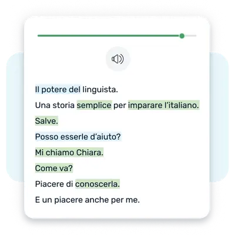

LingQ 快问快答：这套语言学习法到底值不值得蹲
把 LingQ 最常见的七个问题一次性答透——从 Known Word Count 的意义，到 Premium Plus 的 AI 全家桶，再到通勤离线和校园课堂场景。
整理一篇关于 LingQ 的快问快答，把新手最容易纠结、老手偶尔会忘的点一次说清。
LingQ 是什么，适合谁用？
一句话：LingQ官网上那套基于可理解输入（Comprehensible Input）的体系，帮你从零搭建第二语言词汇量。创始人 Steve Kaufmann 自己就是靠这套方法学会了十几种语言，现在把流程做成了 App。
适合谁？想长期啃一门外语（不是考前突击背单词）、想听懂母语者真实对话而不是教材录音、愿意花 3-6 个月看到效果的人。如果你要的是一周速成口语，这套方法的"慢输入 + 快复习"节奏可能让你有点着急。它的核心理念很朴素：你遇到一个生词，标记它（蓝词），系统按 SRS 节奏逼你复习，直到你一次次在不同语境里都能认出来——这才是"掌握了"，不是"背过了"。
Known Word Count 为什么比"背了多少词"靠谱？
这是 LingQ 最被 Steve 反复强调的一个指标。传统语言学习软件喜欢给你看"今天学了 40 分钟""完成了第 12 课""背了 50 个单词"——这些都是过程指标，你"做了"什么，不等于你"得到"了什么。Known Word Count 是 LingQ 的结果指标：只统计所有你标记为 Known（白色）的词和 SRS 评分到 4 分（Learned）的词，它反映的是你在真实阅读和聆听中真正认得出的词汇量。

有个参考：B1 中级大概 Known 2000-3000，B2 中高级 4000-5000，C1 高级 6000-8000。和考试大纲动辄要求"8000 词"的数字比，LingQ 的标准看起来低，原因是它不统计"你背过但没真掌握"的词——更接近实际可用量。健康的增长曲线应该是稳定上升、斜率均匀的平斜坡，大起大落或长期平线说明要么标记太草率、要么输入量不够。
高级版和 Premium Plus 到底差在哪？
Premium 是基础付费档，解锁 LingQ 上限、导入上限、播放列表和 Lynx AI 基础聊天；Premium Plus 在 Premium 之上加了全套 AI 功能。价格分别是 $12.99/月起（Premium）和 $29.99/月起（Premium Plus），年付都有 25% 左右折扣。
真正影响决策的是这几个 AI 能力：AI 转录（把无字幕的 YouTube/播客音频变成带时间戳的交互式课程）、AI 语音合成（给纯文本教材生成朗读音频）、AI 简化课程（把"感兴趣但太难"的内容自动降级到你当前 Known Word Count 能读的水平）、AI 高级聊天（带声音纠错的流利度练习）。想了解每个 AI 功能的配额和用法，翻翻文档里的 AI 专区就够了。Premium 的 AI 转录配额每月约 60 分钟，Premium Plus 翻到 360 分钟，还多了语音合成和简化功能。典型 Premium Plus 用户是同时学多门语言、大量导入外部内容、听力弱于阅读的人——如果你只用官方课程不导入，Premium 就够了。
离线下载怎么用，有啥限制？
离线下载是 Premium 及以上的专属功能，通勤族和长途旅行者最需要。安装包从下载拿就行，iOS 和 Android 操作一样：打开课程→右上角↓图标→等下载完成变成✓。播放列表里可以长按批量下载，准备出差前一晚 Wi-Fi 下把一周要学的内容都下好。

下载内容占空间：短篇音频（5-10 分钟）约 5-15 MB，长播客（30-60 分钟）30-80 MB，整季剧可能 500 MB 以上。存储空间在 App 设置 → Storage 里管理，可以删除旧内容、改下载目录到 SD 卡，勾选 Only Download on Wi-Fi 省流量。
离线时能做的事：读课程、听音频、标记 LingQ（存在本地缓存，联网后自动同步）、做 SRS 复习、查词汇库。不能做的事：Lynx AI 聊天、浏览器扩展、社区功能（作文批改、会话、论坛）、导入新内容。一个常见的坑是：离线期间新到期的 SRS 复习队列可能需要网络刷新，所以飞行模式下第一天的复习基本没问题，第二天开始可能会弹提示。
Schools 校园版是给谁准备的？
Schools 不是个人账户的变种，是一套独立的课堂管理系统。针对学校、语言培训机构、企业培训部门设计——教师创建班级、生成邀请码、布置课程、实时追踪学生的 Known Word Count、学习时长、SRS 完成情况，还能批改作文、看班级排行榜。
学生加入班级后，账户功能和 Premium 类似（LingQ 上限、导入上限全部解锁），但费用由学校统一按席位承担。价格大致是 10-50 学生 $5-8/人/月，50-200 学生 $3-5/人/月，200+ 谈合同。教师可以为自己的班级创建独家课程——上传自己的教学材料、把学生常见错误做成复习内容、针对 DELE/DELF/JLPT 整理高频词表。30 天免费试用，老师可以带几个学生试试再决定。如果你的外语课老师用了这套，直接问他要邀请码就行，注册时输入自动加入。
导入外部内容时 AI 功能能帮上什么忙？
这是 Premium Plus 最核心的价值所在。你找到一段想学的内容——比如一集日语动漫解说、一段西班牙播客、一本纯文本版的法国小说——但要么没字幕要么只有文字没音频。LingQ 的导入引擎在 Premium Plus 加持下能帮你打通：AI 转录把无字幕音频变成带精确时间戳的文本，AI 语音合成给纯文本书籍生成自然朗读，AI 简化把高于你当前水平的内容自动降级，让你既能学到东西又不会卡壳。
一个真实的日语学习者案例：每天从 YouTube 导入一集 NHK 新闻（无字幕），Premium Plus 帮他 AI 转录 → 如果新闻里的生词率超过 15% 就 AI 简化到 N2 水平 → 每天学完后用 Lynx AI 高级聊天用日语复述今天听到的内容。这套组合拳里，转录、简化、高级聊天全是 Premium Plus 专属。没有 AI 转录的话，你要么得找带字幕的视频、要么跳过、要么手动打字幕——后者基本不现实。
长期用下来值不值？
值不值其实是看你有没有那个"坚持每天输入"的决心。LingQ 本身只是一个帮你把可理解输入流程化的工具——词汇量的增长靠的是你每天读和听的量，SRS 复习只是帮你不遗忘，Known Word Count 帮你监控进度。它不会替你学，但能把你"想学但不知道学什么、不知道自己学了多少、不知道生词什么时候会忘"这三个问题解决掉。
最后一句：如果你打算认真啃一门外语半年以上、又不想背单词软件那样枯燥，从 Premium 开始试用两个月——只要 Known Word Count 在稳步上涨，就说明这套方法对你有用，继续蹲就行。
整理这篇问答时用到的参考资料，分别同步在 GitHub、Gitee 和 GitCode 三个仓库里，随便哪个能访问就能拿到。